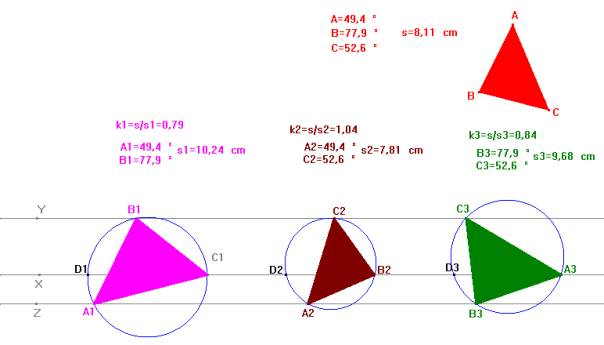
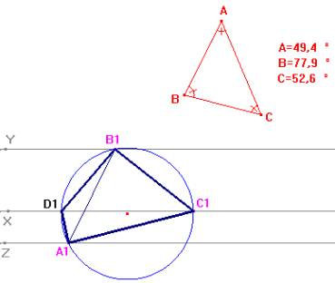

Problema
99.-
Un
problema sobre semejanzas y paralelismo.
Construir un triángulo cuyos vértices están en tres paralelas dadas y que sea
semejante a otro triángulo dado.
Solución de F. Damián Aranda Ballesteros profesor de Matemáticas del
IES Blas Infante en Córdoba

Supongamos resuelto el problema y observemos a partir de
dicha solución cómo puede realizarse la construcción.

Sea una cualquiera de las posibles soluciones A1B1C1 y sea el punto D1, punto que pertenece a una de las rectas, recta X, y a la circunferencia circunscrita al triángulo A1 B1 C1. Desde este punto D1 obtenemos las siguientes igualdades entre ángulos inscritos en la circunferencia<A1D1C1=<A1B1C1=<B
<B1D1C1=<B1A1C1=<A
En
definitiva, para un punto cualquiera D1 situado en una de las
rectas, p.e. recta X, giramos dicha recta alrededor del punto D1
ángulos iguales a <B y <C, respectivamente y obtenemos así el triángulo D1A1B1,
cuya circunferencia circunscrita determina como segundo punto de intersección
con la recta X, el tercer vértice C1. Del mismo modo actuaríamos en
todos los casos.